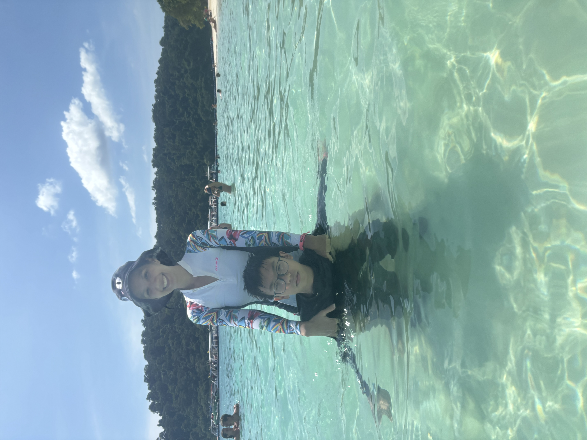
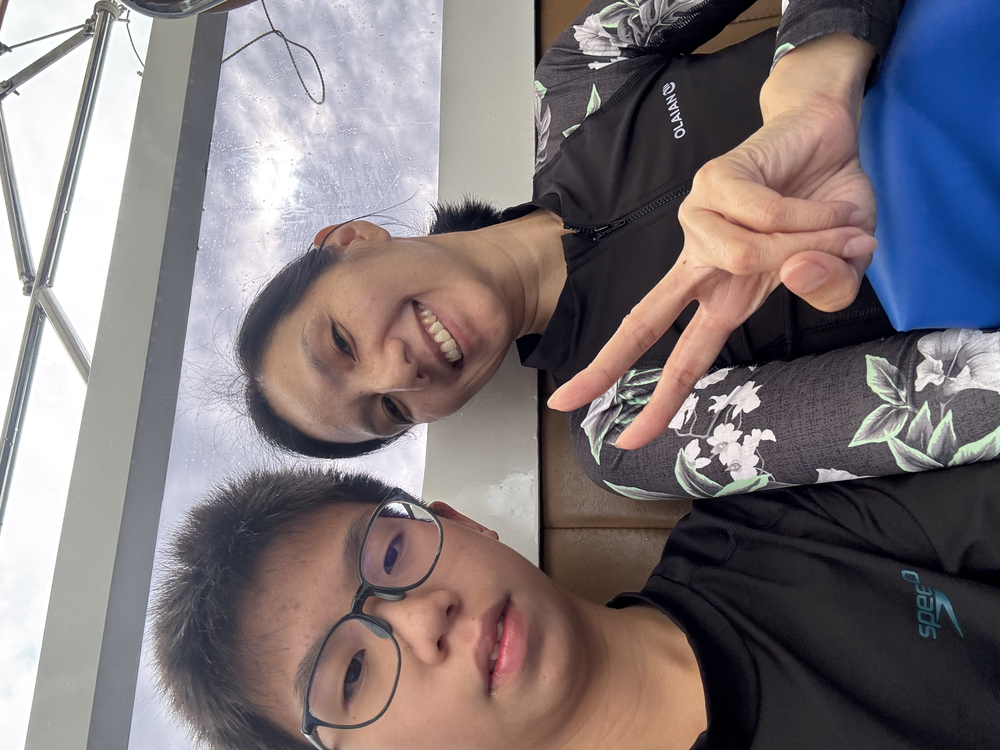
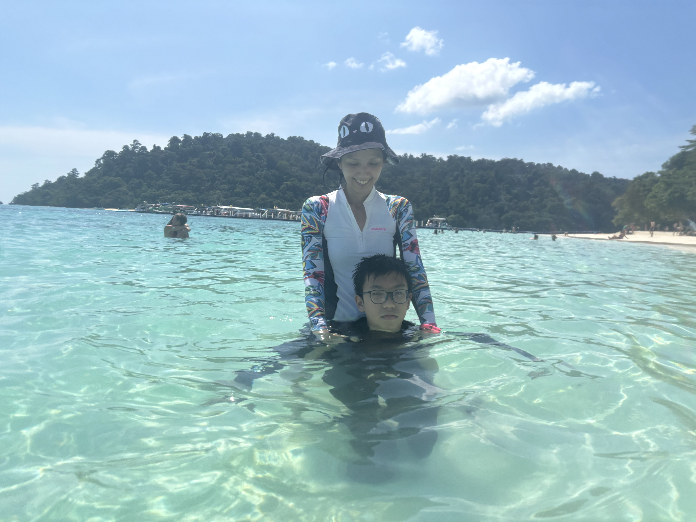

วันพ่อแห่งชาติ🏴☠️
สิ่งที่อยากจะบอกพ่อ
Dad ,I love u so much.I will be a doctor and be a good person.
 
บทกลอนมอบให้พ่อ
พ่อดุจดั่ง เป็นร่มโพธิ์ ให้ลูกน้อยจะเฝ้าคอย ดูแล ไม่ไปไหน
ค่อยปกป้อง ลูกน้อย ไม่ห่างไกล
คอยใส่ใจ ให้เติบใหญ่ เป็นคนดี
Dad ,I love u so much.I will be a doctor and be a good person.